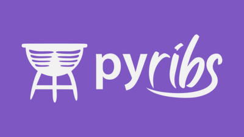

David Haolong Lee
Research Assistant @ USC ICAROS Lab, Co-founder @ Licon Graphics
I am a Junior studying Computer Science at
USC.
Concurrent with my studies, I work at the
ICAROS Lab, where I research
Quality Diversity Optimization. I am also interested in
theoretical computer science. I am a co-founder of
Licon Graphics, where we are building easily accessible 3D
reconstruction technologies. In pursuit of my academic interest, I have
taken a few Ph.D. courses.
Provost Fellowship and
W.V.T. Engineering Honors Program.
Blogs
-
WIP
Projects
-
